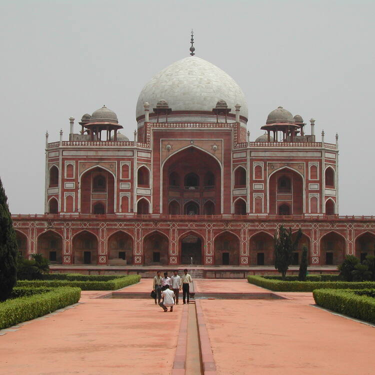
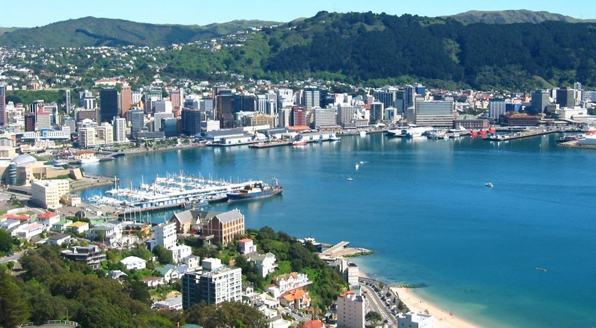
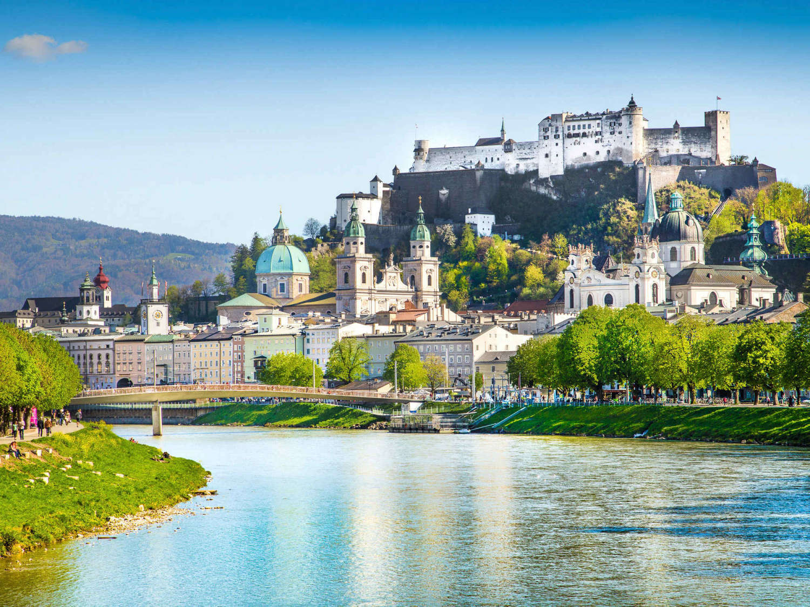
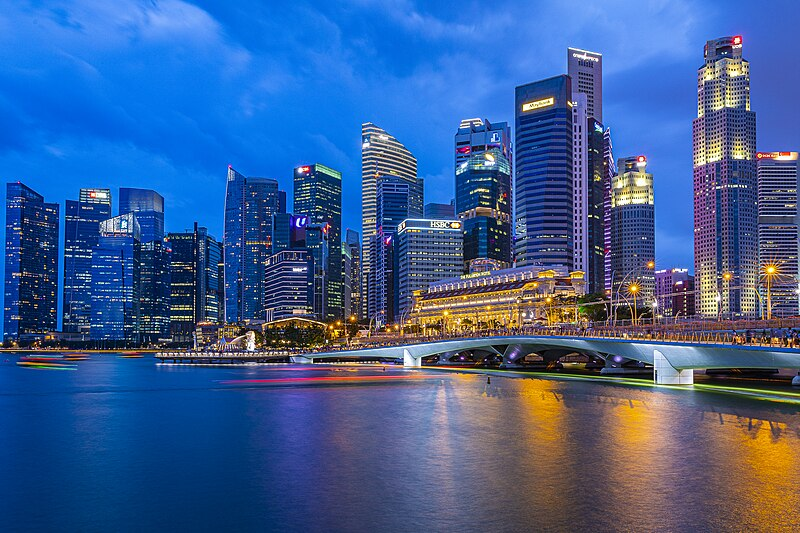

Yellowstone


Geographical Location: North America
Yellowstone is the first national park in the United States. It covers over 2.2 million acres, and provides an opportunity to see wildlife and explore geothermal areas. In fact, Yellowstone contains about half the world's active geysers.
These unique opportunities also bring out a lot of bad decisions among the tourists. Every year visitors injure themselves or the wildlife by getting close to the animals. You can see examples of people making bad decisions by visiting Yellowstone National Park: Invasion of the Idiots, Tourons of Yellowstone, or Cowboy State Daily.
Photo Gallery


New York City


Geographical Location: North America
New York City is a bustling and vibrant city and is one of the world’s largest financial and cultural centers. It is home to around 8 million people!
There are so many sights to see like the Statue of Liberty, Times Square, Ellis Island, and so forth. New York is also a great place to shop, eat, and explore!
Photo Gallery


Sydney, Australia

Geographical Location: Oceania
Sydney is one of the most famous cities in Australia, known for the Sydney Opera House. It is a cheerful city, and everyone is very friendly. When I went there with my family, everyone was very amiable and it was a lovely experience!
Sydney also has a lot of things to see and do. The Sydney Opera House is a beautiful place to go inside, for starters. Standing on the Harbour Bridge also gives a lovely view of the city. Sydney also has a few beaches like Bondi Beach and Manly Island, and those are great places to get some warmth and sunlight!
Photo Gallery
Delhi, India
Geographical Location: Asia
Delhi is the capital of India, and is a bustling, vibrant city, home to millions of people. It is a city with a very long and rich history, and today, its history coexists with its moderness and urbanity.
Delhi also has so many things to see and do. There are big and trendy malls to shop at, and so many street markets with amazing clothes and jewellery. There are lots of old forts and historical landmarks to go see as well, such as Red Fort and Hauz Khas.
Photo Gallery
New Zealand
Geographical Location: Oceania
New Zealand is a country just east of Australia, and is divided into the North and South Island. It is home to the kiwi bird. The Lord of the Rings films were also shot here.
New Zealand is also known for its incredible natural beauty. It has pristine beaches, amazing mountains to hike in, and so much greenery and clear waters!
Photo Gallery
Dubai, UAE

Geographical Location: Middle-East
Dubai is one of the most well-known cities in the United Arab Emirates. It is a very modern and luxurious city, with lots of skyscrapers and places to shop.
There are many things to do in the city, such as visit the big malls in the city, where there are plenty of high-end shops to browse in. Jumeirah Mosque is also a lovely place to visit, as well as the sand dunes outside of the city.
Photo Gallery
Salzburg, Austria
Geographical Location: Europe
Salzburg is a charming city in Austria, next to the Alps. It is filled with beautiful European architecture and has lovely cobblestone streets to stroll along. This was also where The Sound of Music was filmed!
In Salzburg, you can visit Mozart's birthplace and go inside his house! There are also other beautiful sights like Fortress Hohensalzburg and Salzburg Cathedral.
Photo Gallery
Singapore
Geographical Location: Asia
Singapore is a country in Southeast Asia that is also an island and a city in itself. The name comes from the Sanskrit word for 'lion city.'
Singapore is a very global and modern city, and also has lovely gardens and places to walk around. It is also an extremely clean city - people can be fined for littering!
Photo Gallery